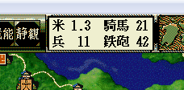

void カスタム::On_相場変更直前() {
}

void カスタム::On_相場変更直前() {
// 夏だけは以下の相場にする。
if ( p年情報.季節 == 季節::夏 ) {
Set_米相場(8); // 天翔記表示上は0.8のこと
Set_鉄砲相場(30); // 鉄砲相場を30にする。
Set_馬相場(10); // 馬相場を10に設定する。
Set_兵相場(15); // 兵相場を15に設定する。
}
}
void カスタム::On_相場変更直前() {
// 春になると、全ての軍団に金が10000配られる
if ( p年情報.季節 == 季節::春 ) {
// 全ての軍団に対して
for ( int iGundanID=0; iGundanID < 最大数::軍団情報::配列数; iGundanID++ ) {
// 軍団長の武将ＩＤを求める。
int iLeaderBushouID = p軍団情報[iGundanID].軍団長【武将番号】-1;
// ちゃんと軍団長がいるならば… 有効な軍団。
if ( 0 <= iLeaderBushouID && iLeaderBushouID < 最大数::武将情報::配列数 ) {
// そこに60000を超えない範囲で金を配る。
int Gold = p軍団情報[iGundanID].金; // WORD型→int型にして容易にオーバーフローしてしまうのを対処
Gold += 10000;
if ( Gold > 60000 ) {
Gold = 60000;
}
p軍団情報[iGundanID].金 = Gold;
}
}
}
}